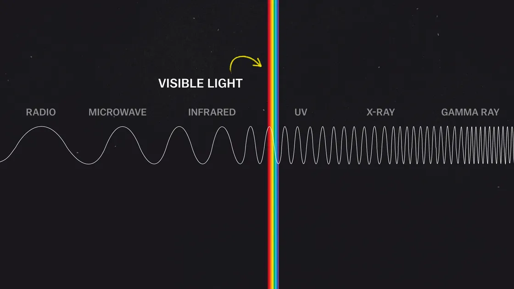

EXO. PLANETS
| EXO Planets images | Details about Planets |
|---|---|
 |
Gliese 667Cc is a super-Earth exoplanet located just 22 light-years from Earth. It is at least 4.5 times more massive than Earth, and it orbits a red dwarf star. Gliese 667Cc is located in the habitable zone of its star, meaning that liquid water could potentially exist on its surface. |
 |
Kepler-186f is a rocky exoplanet located in the habitable zone of its star. It is about 1.1 times more massive than Earth, and it orbits a star similar to the sun. Kepler-186f is located about 500 light-years from Earth. |
 |
Kepler-22b is another super-Earth exoplanet located in the habitable zone of its star. It is about 2.4 times more massive than Earth, and it orbits a sun-like star. Kepler-22b is located about 600 light-years from Earth. |
 |
Kepler-62f is a rocky exoplanet located in the habitable zone of its star. It is about 1.4 times more massive than Earth, and it orbits a red dwarf star. Kepler-62f is located about 1,200 light-years from Earth. |
 |
Kepler-69c is a rocky exoplanet located in the habitable zone of its star. It is about 1.7 times
more massive than Earth, and it orbits a star slightly cooler than the sun. Kepler-69c is
located about 2,700 light-years from Earth.
A comparsion of exo planet Kepler-69c and our planet Earth can be seen in the image. |
| Questions | Answers |
|---|---|
| What is an EXO Planet? | All of the planets in our solar system orbit around the Sun. Planets that orbit around other
stars are
called exoplanets. Exoplanets are very hard to see directly with telescopes. They are hidden by
the
bright glare of the stars they orbit.
Most of the exoplanets discovered so far are in a relatively small region of our galaxy, the
Milky Way.
We know from NASA's Kepler Space Telescope that there are more planets than stars in the galaxy.
The first exoplanets were discovered in the 1990s and since then we've identified thousands using a variety of detection methods. |
| What Colors Are in Space? | Space has a great spectrum of colors regarding celestial bodies, and celestial bodies are
typically assorted into a spectral class according to their hue. Celestial bodies go through
phases of spectral evolution where they behave similarly to iron heated in a fire. Throughout
their evolutionary phases, they will shift from red to orange, yellow, white, or blue as they
reach their hottest phases. Depending on trace amounts of elements — aside from hydrogen and
helium — stars may appear in cooler secondary colors like purple and green.
Stars can exhibit the following colors, in order from hottest to coldest:
|
| How scientists colorize photos of space? | The Hubble Space Telescope only takes photos in black and white. To make those beautiful space
photos you've probably seen, scientists add the color later, using a technique developed around
the turn of the 20th century that imitates how our eyes naturally perceive color.  Only a fraction of the range of frequencies of light and their wavelengths, called the electromagnetic spectrum, is visible to humans. The photoreceptors in our eyes, called “cone cells,” perceive wavelengths of light that appear roughly red, green, and blue. All other colors are combinations of these three, and they're known as the primary colors of light. When Hubble scientists take photos of space, they use filters to record specific wavelengths of light. Later, they add red, green, or blue to color the exposures taken through those filters. The result is full-color images that have a variety of purposes for scientific analysis. |